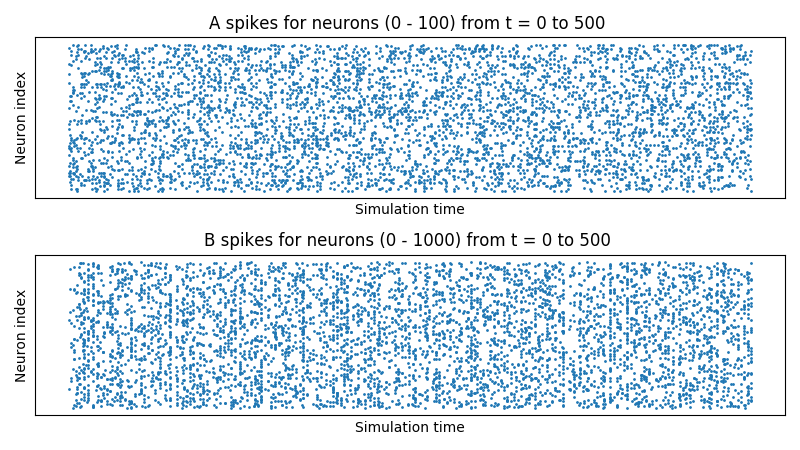
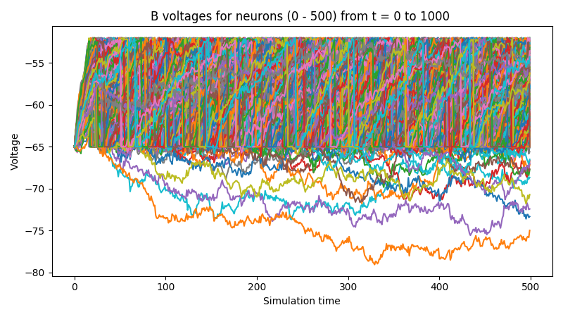

Welcome to BindsNET’s documentation!¶
BindsNET is built on top of the PyTorch deep learning platform. It is used for the simulation of spiking neural networks (SNNs) and is geared towards machine learning and reinforcement learning.
BindsNET takes advantage of the torch.Tensor object to build spiking neurons and connections between them, and
simulate them on CPUs or GPUs (for strong acceleration / parallelization) without any extra work. Recently,
torchvision.datasets has been integrated into the library to allow the use of popular vision datasets in
training SNNs for computer vision tasks. Neural network functionality contained in torch.nn.functional module is
used to implement more complex connections between populations of spiking neurons.
Spiking neural networks are sometimes referred to as the third generation of neural networks. Rather than the simple linear layers and nonlinear activation functions of deep learning neural networks, SNNs are composed of neural units which more accurately capture properties of their biological counterparts. An important difference between spiking neurons and the artificial neurons of deep learning are the former’s integration of input in time; they are naturally short-term memory devices by their maintenance of a (possibly decaying) membrane voltage. As a result, some have argued that SNNs are particularly well-suited to model time-varying data.
Neurons are connected together with directed edges (synapses) which are (in general) plastic. Synapses may have their own dynamics as well, which may or may not depend on pre- and post-synaptic neural activity https://www.ncbi.nlm.nih.gov/pmc/articles/PMC3395004/ or other biological signals https://www.ncbi.nlm.nih.gov/pmc/articles/PMC4717313/. The modification of synaptic strengths is thought to be an important mechanism by which organisms learn. Accordingly, BindsNET provides a module (bindsnet.learning) which contains functions used for the updating of synapse weights.
At its core, BindsNET provides software objects and methods which support the simulation of groups of different types of neurons (bindsnet.network.nodes), as well as different types of connections between them (bindsnet.network.topology). These may be arbitrarily combined together under a single bindsnet.network.Network object, which is responsible for the coordination of the simulation logic of all underlying components. On creation of a network, the user can specify a simulation timestep constant, \(dt\), which determines the granularity of the simulation. Choosing this parameter induces a trade-off between simulation speed and numerical precision: large values result in fast simulation, but poor simulation accuracy, and vice versa. Monitors (bindsnet.network.monitors) are available for recording state variables from arbitrary network components (e.g., the voltage \(v\) of a group of neurons).
The development of BindsNET is supported by the Defense Advanced Research Project Agency Grant DARPA/MTO HR0011-16-l-0006.
Installation¶
Installing from source¶
On *nix systems, issue one of the following in a shell:
git clone https://github.com/Hananel-Hazan/bindsnet.git # HTTPS
git clone git@github.com:Hananel-Hazan/bindsnet.git # SSH
Change directory into bindsnet and issue one of the following:
pip install . # Typical install
pip install -e . # Editable mode (package code can be edited without reinstall)
This will install bindsnet and all its dependencies.
Running the tests¶
If BindsNET is installed from source, install pytest and issue the following from BindsNET’s installation directory:
python -m pytest test
Quickstart¶
Check out some example use cases for BindsNET in the examples/ folder
(link). For example, changing directory to
[bindsnet-root]/examples/mnist and running the following will result in a near-replication of the architecture of
Diehl & Cook 2015:
python eth_mnist.py [options]
The token [options] should be replaced with any command-line arguments you’d like to use to modify the behavior
of the program.
BindsNET User Manual¶
Welcome to BindsNET’s user manual! To get started, click on one of the links below.
Part I: Creating and Adding Network Components¶
Creating a Network¶
The bindsnet.network.Network object is BindsNET’s main offering. It is responsible for the coordination of
simulation of all its constituent components: neurons, synapses, learning rules, etc. To create one:
from bindsnet.network import Network
network = Network()
The bindsnet.network.Network object accepts optional keyword arguments dt,
batch_size, learning, and reward_fn.
The dt argument specifies the simulation time step, which determines what temporal granularity, in milliseconds,
simulations are solved at. All simulation is done with the Euler method for the sake of computational simplicity. If
instability is encountered in your simulation, use a smaller dt to resolve numerical instability.
The batch_size argument specifies the expected minibatch size of the input data. However, since BindsNET
supports dynamics minibatch size, this argument can safely be ignored. It is used to initialize stateful neuronal
and synaptic variables, and may provide a small speedup if specified beforehand.
The learning argument acts to enable or disable updates to adaptive parameters of network components; e.g.,
synapse weights or adaptive voltage thresholds. See `Using Learning Rules`_ for more details.
The reward_fn argument takes in class that specifies how a scalar reward signal will be computed and fed to the
network and its components. Typically, the output of this callable class will be used in certain “reward-modulated”, or
“three-factor” learning rules. See `Using Learning Rules`_ for more details.
Adding Network Components¶
BindsNET supports three categories of network component: layers of neurons (nodes), connections between them
(bindsnet.network.topology), and monitors for recording the evolution of state variables
(bindsnet.network.monitors).
Note
Names of components in a network are arbitrary, and need only be unique within their component group
(layers, connections, and monitors) in order to address them uniquely. We encourage our
users to develop their own naming conventions, using whatever works best for them.
Creating and adding layers¶
To create a layer (or population) of nodes (in this case, leaky integrate-and-fire (LIF) neurons:
from bindsnet.network.nodes import LIFNodes
# Create a layer of 100 LIF neurons with shape (10, 10).
layer = LIFNodes(n=100, shape=(10, 10))
Each bindsnet.network.nodes object has many keyword arguments, but one of either n (the number of
nodes in the layer, or shape (the arrangement of the layer, from which the number of nodes can be computed) is
required. Other arguments for certain nodes objects include thresh (scalar or tensor giving voltage threshold(s)
for the layer), rest (scalar or tensor giving resting voltage(s) for the layer), traces (whether to
keep track of “spike traces” for each neuron in the layer), and tc_decay (scalar or tensor giving time
constant(s) of the layer’s neurons’ voltage decay).
To add a layer to the network, use the add_layer function, and give it a name (a string) to call it by:
network.add_layer(
layer=layer, name="LIF population"
)
Such layers are kept in the dictionary attribute network.layers, and can be accessed by the user; e.g., by
network.layers['LIF population'].
Other layer types include bindsnet.network.nodes.Input (for user-specified input spikes),
bindsnet.network.nodes.RealInput (for user-specified real-valued inputs),
bindsnet.network.nodes.McCullochPitts (the McCulloch-Pitts neuron model),
bindsnet.network.nodes.AdaptiveLIFNodes (LIF neurons with adaptive thresholds), and
bindsnet.network.nodes.IzhikevichNodes (the Izhikevich neuron model). Any number of layers can be
added to the network.
Custom nodes objects can be implemented by sub-classing bindsnet.network.nodes.Nodes, an abstract class with
common logic for neuron simulation. The functions forward(self, x: torch.Tensor) (computes effects of input
data on neuron population; e.g., voltage changes, spike occurrences, etc.), reset_state_variables(self) (resets neuron state
variables to default values), and _compute_decays(self) must be implemented, as they are included as abstract
functions of bindsnet.network.nodes.Nodes.
Creating and adding connections¶
Connections can be added between different populations of neurons (a projection), or from a population back to itself (a recurrent connection). To create an all-to-all connection:
from bindsnet.network.nodes import Input, LIFNodes
from bindsnet.network.topology import Connection
# Create two populations of neurons, one to act as the "source"
# population, and the other, the "target population".
source_layer = Input(n=100)
target_layer = LIFNodes(n=1000)
# Connect the two layers.
connection = Connection(
source=source_layer, target=target_layer
)
Like nodes, each connection object has many keyword arguments, but both source and target are required.
These must be objects that subclass bindsnet.network.nodes.Nodes. Other arguments include w and b
(weight and bias tensors for the connection), wmin and wmax (minimum and maximum allowable weight
values), update_rule (bindsnet.learning.LearningRule; used for updating connection weights based on
pre- and post-synaptic neuron activity and / or global neuromodulatory signals), and norm (a floating point value
to normalize weights by).
To add a connection to the network, use the add_connection function, and pass the names given to source and
target populations as source and target arguments. Make sure that the source and target neurons are
added to the network as well:
network.add_layer(
layer=source_layer, name="A"
)
network.add_layer(
layer=target_layer, name="B"
)
network.add_connection(
connection=connection, source="A", target="B"
)
Connections are kept in the dictionary attribute network.connections, and can be accessed by the user; e.g., by
network.connections['A', 'B']. The layers must be added to the network with matching names (respectively,
A and B) in order for the connection to work properly. There are no restrictions on the directionality
of connections; layer “A” may connect to layer “B”, and “B” back to “A”, or “A” may connect directly back to itself.
Custom connection objects can be implemented by sub-classing bindsnet.network.topology.AbstractConnection, an
abstract class with common logic for computing synapse outputs and updates. This includes functions compute (for computing
input to downstream layer as a function of spikes and connection weights), update (for updating connection
weights based on pre-, post-synaptic activity and possibly other signals; e.g., reward prediction error),
normalize (for ensuring weights incident to post-synaptic neurons sum to a pre-specified value), and reset_state_variables
(for re-initializing stateful variables for the start of a new simulation).
Specifying monitors¶
bindsnet.network.monitors.AbstractMonitor objects can be used to record tensor-valued variables over the
course of simulation in certain network components. To create a monitor to monitor a single component:
from bindsnet.network import Network
from bindsnet.network.nodes import Input, LIFNodes
from bindsnet.network.topology import Connection
from bindsnet.network.monitors import Monitor
network = Network()
source_layer = Input(n=100)
target_layer = LIFNodes(n=1000)
connection = Connection(
source=source_layer, target=target_layer
)
# Create a monitor.
monitor = Monitor(
obj=target_layer,
state_vars=("s", "v"), # Record spikes and voltages.
time=500, # Length of simulation (if known ahead of time).
)
The user must specify a Nodes or AbstractConnection object from which to record, attributes of that
object to record (state_vars), and, optionally, how many time steps the simulation(s) will last, in order to
save time by pre-allocating memory.
To add a monitor to the network (thereby enabling monitoring), use the add_monitor function of the
bindsnet.network.Network class:
network.add_layer(
layer=source_layer, name="A"
)
network.add_layer(
layer=target_layer, name="B"
)
network.add_connection(
connection=connection, source="A", target="B"
)
network.add_monitor(monitor=monitor, name="B")
The name given to the monitor is not important. It is simply used by the user to select from the monitor objects
controlled by a Network instance.
One can get the contents of a monitor by calling network.monitors[<name>].get(<state_var>), where
<state_var> is a member of the iterable passed in for the state_vars argument. This returns a tensor of
shape (time, n_1, ..., n_k), where (n_1, ..., n_k) is the shape of the recorded state variable.
The bindsnet.network.monitors.NetworkMonitor is used to record from many network components at once. To
create one:
from bindsnet.network.monitors import NetworkMonitor
network_monitor = NetworkMonitor(
network: Network,
layers: Optional[Iterable[str]],
connections: Optional[Iterable[Tuple[str, str]]],
state_vars: Optional[Iterable[str]],
time: Optional[int],
)
The user must specify the network to record from, an iterable of names of layers (entries in network.layers),
an iterable of 2-tuples referring to connections (entries in network.connections), an iterable of tensor-valued
state variables to record during simulation (state_vars), and, optionally, how many time steps the simulation(s)
will last, in order to save time by pre-allocating memory.
Similarly, one can get the contents of a network monitor by calling network.monitors[<name>].get(). Note this
function takes no arguments; it returns a dictionary mapping network components to a sub-dictionary mapping state
variables to their tensor-valued recording.
Running Simulations¶
After building up a Network object, the next step is to run a simulation. Here, the function
Network.run comes into play. It takes arguments inputs (a dictionary mapping names of
layers subclassing AbstractInput to input data of shape [time, batch_size, *input_shape],
where input_shape is the shape of the neuron population to which the data is passed), time
(the number of simulation timesteps, generally thought of as milliseconds), and a number of keyword
arguments, including clamp (and unclamp), used to force neurons to spike (or not spike)
at any given time step, reward, for supplying to reward-modulated learning rules, and masks,
a dictionary mapping connections to boolean tensors specifying which synapses weights to clamp to zero.
Building on the previous parts of this guide, we present a simple end-to-end example of simulating a two-layer, input-output spiking neural network.
import torch
import matplotlib.pyplot as plt
from bindsnet.network import Network
from bindsnet.network.nodes import Input, LIFNodes
from bindsnet.network.topology import Connection
from bindsnet.network.monitors import Monitor
from bindsnet.analysis.plotting import plot_spikes, plot_voltages
# Simulation time.
time = 500
# Create the network.
network = Network()
# Create and add input, output layers.
source_layer = Input(n=100)
target_layer = LIFNodes(n=1000)
network.add_layer(
layer=source_layer, name="A"
)
network.add_layer(
layer=target_layer, name="B"
)
# Create connection between input and output layers.
forward_connection = Connection(
source=source_layer,
target=target_layer,
w=0.05 + 0.1 * torch.randn(source_layer.n, target_layer.n), # Normal(0.05, 0.01) weights.
)
network.add_connection(
connection=forward_connection, source="A", target="B"
)
# Create recurrent connection in output layer.
recurrent_connection = Connection(
source=target_layer,
target=target_layer,
w=0.025 * (torch.eye(target_layer.n) - 1), # Small, inhibitory "competitive" weights.
)
network.add_connection(
connection=recurrent_connection, source="B", target="B"
)
# Create and add input and output layer monitors.
source_monitor = Monitor(
obj=source_layer,
state_vars=("s",), # Record spikes and voltages.
time=time, # Length of simulation (if known ahead of time).
)
target_monitor = Monitor(
obj=target_layer,
state_vars=("s", "v"), # Record spikes and voltages.
time=time, # Length of simulation (if known ahead of time).
)
network.add_monitor(monitor=source_monitor, name="A")
network.add_monitor(monitor=target_monitor, name="B")
# Create input spike data, where each spike is distributed according to Bernoulli(0.1).
input_data = torch.bernoulli(0.1 * torch.ones(time, source_layer.n)).byte()
inputs = {"A": input_data}
# Simulate network on input data.
network.run(inputs=inputs, time=time)
# Retrieve and plot simulation spike, voltage data from monitors.
spikes = {
"A": source_monitor.get("s"), "B": target_monitor.get("s")
}
voltages = {"B": target_monitor.get("v")}
plt.ioff()
plot_spikes(spikes)
plot_voltages(voltages, plot_type="line")
plt.show()
This script will result in figures that looks something like this:
 Notice that, in the voltages plot, no voltage goes above -52mV, the default threshold of the LIFNodes object.
After hitting this point, neurons’ voltage is reset to -64mV, which can also be seen in the figure.
Simulation Notes¶
The simulation of all network components is synchronous (clock-driven); i.e., all components are updated at each
time step. Other frameworks use event-driven simulation, where spikes can occur at arbitrary times instead of at
regular multiples of dt. We chose clock-driven simulation due to ease of implementation and for computational
efficiency considerations.
During a simulation step, input to each layer is computed as the sum of all outputs from layers connecting to it
(weighted by synapse weights) from the previous simulation time step (implemented by the _get_inputs method
of the bindsnet.network.Network class). This model allows us to decouple network components and perform
their simulation separately at the temporal granularity of chosen dt, interacting only between simulation steps.
This is a strict departure from the computation of deep neural networks (DNNs), in which an ordering of layers is supposed, and layers’ activations are computed in sequence from the shallowest to the deepest layer in a single time step, with the exclusion of recurrent layers, whose computations are still ordered in time.
Part II: Creating and Adding Learning Rules¶
What is considered a learning rule?¶
Learning rules are necessary for the automated adaption of network parameters during simulation. At present, BindsNET supports two different categories of learning rules:
- Two factor: Associative learning takes place based on pre- and post-synaptic neural activity. Examples include:
- The typical example is Hebbian learning, which may be summarized as “Cells that fire together wire together.” That is, co-active neurons causes their connection strength to increase.
- Spike-timing-dependent plasticity (STDP) stipulates that the ordering of pre- and post-synaptic spikes matters. A synapse is strengthened if the pre-synaptic neuron fires before the post-synaptic neuron, and, conversely, is weakened if it fires after the post-synaptic neuron. The magnitude of these updates is a decreasing function of the time between pre- and post-synaptic spikes.
- Three factor: In addition to associating pre- and post-synaptic neural activity, a third factor is introduced which modulates plasticity on a more global level; e.g., for all synapses in the network. Examples include:
- (Reward, error, attention)-modulated (Hebbian learning, STDP): The same learning rules described above are modulated by the presence of global signals such as reward, error, or attention, which can be variously defined in machine learning or reinforcement learning contexts. These signals act to gate plasticity, turning it on or off and switching its sign and magnitude, based on the task at hand.
The above are examples of local learning rules, where the information needed to make updates are thought to be available at the synapse. For example, pre- and post-synaptic neurons are adjacent to synapses, rendering their spiking activity accessible, whereas chemical signals like dopamine (hypothesized to be a reward prediction error (RPE) signal) are widely distributed across certain neuron populations; i.e., they are globally available. This is in contrast to learning algorithms like back-propagation, where per-synapse error signals are derived by computing backwards from a loss function at the network’s output layer. Such error derivation is thought to be biologically implausible, especially compared to the two- and three-factor rules mentioned above.
Creating a learning rule in BindsNET¶
At present, learning rules are attached to specific Connection objects. For
example, to create a connection with a STDP learning rule on the synapses:
from bindsnet.network.nodes import Input, LIFNodes
from bindsnet.network.topology import Connection
from bindsnet.learning import PostPre
# Create two populations of neurons, one to act as the "source"
# population, and the other, the "target population".
# Neurons involved in certain learning rules must record synaptic
# traces, a vector of short-term memories of the last emitted spikes.
source_layer = Input(n=100, traces=True)
target_layer = LIFNodes(n=1000, traces=True)
# Connect the two layers.
connection = Connection(
source=source_layer, target=target_layer, update_rule=PostPre, nu=(1e-4, 1e-2)
)
The connection may be added to a Network instance as usual. The Connection object
takes arguments update_rule, of type bindsnet.learning.LearningRule, as well
as nu, a 2-tuple specifying pre- and post-synaptic learning rates; i.e., multiplicative
factors which modulate how quickly synapse weights change.
Learning rules also accept arguments reduction, which specifies how parameter updates are
aggregated across the batch dimension, and weight_decay, which specifies the time constant
of the rate of decay of synapse weights to zero. By default, parameter updates are averaged across
the batch dimension, and there is no weight decay.
Other supported learning rules include Hebbian, WeightDependentPostPre,
MSTDP (reward-modulated STDP), and MSTDPET (reward-modulated STDP with
eligibility traces).
Custom learning rules can be implemented by subclassing bindsnet.learning.LearningRule
and providing implementations for the types of AbstractConnection objects intended to be used.
For example, the Connection and LocalConnection objects rely on the implementation
of a private method, _connection_update, whereas the Conv2dConnection object
uses the _conv2d_connection_update version.
bindsnet package¶
Subpackages¶
bindsnet.analysis package¶
Submodules¶
bindsnet.analysis.plotting module¶
-
bindsnet.analysis.plotting.plot_assignments(assignments: torch.Tensor, im: Optional[matplotlib.image.AxesImage] = None, figsize: Tuple[int, int] = (5, 5), classes: Optional[Sized] = None) → matplotlib.image.AxesImage[source]¶ Plot the two-dimensional neuron assignments.
Parameters: - assignments – Vector of neuron label assignments.
- im – Used for re-drawing the assignments plot.
- figsize – Horizontal, vertical figure size in inches.
- classes – Iterable of labels for colorbar ticks corresponding to data labels.
Returns: Used for re-drawing the assigments plot.
-
bindsnet.analysis.plotting.plot_conv2d_weights(weights: torch.Tensor, wmin: float = 0.0, wmax: float = 1.0, im: Optional[matplotlib.image.AxesImage] = None, figsize: Tuple[int, int] = (5, 5), cmap: str = 'hot_r') → matplotlib.image.AxesImage[source]¶ Plot a connection weight matrix of a Conv2dConnection.
Parameters: - weights – Weight matrix of Conv2dConnection object.
- wmin – Minimum allowed weight value.
- wmax – Maximum allowed weight value.
- im – Used for re-drawing the weights plot.
- figsize – Horizontal, vertical figure size in inches.
- cmap – Matplotlib colormap.
Returns: Used for re-drawing the weights plot.
-
bindsnet.analysis.plotting.plot_input(image: torch.Tensor, inpt: torch.Tensor, label: Optional[int] = None, axes: List[matplotlib.axes._axes.Axes] = None, ims: List[matplotlib.image.AxesImage] = None, figsize: Tuple[int, int] = (8, 4)) → Tuple[List[matplotlib.axes._axes.Axes], List[matplotlib.image.AxesImage]][source]¶ Plots a two-dimensional image and its corresponding spike-train representation.
Parameters: - image – A 2D array of floats depicting an input image.
- inpt – A 2D array of floats depicting an image’s spike-train encoding.
- label – Class label of the input data.
- axes – Used for re-drawing the input plots.
- ims – Used for re-drawing the input plots.
- figsize – Horizontal, vertical figure size in inches.
Returns: Tuple of
(axes, ims)used for re-drawing the input plots.
-
bindsnet.analysis.plotting.plot_locally_connected_weights(weights: torch.Tensor, n_filters: int, kernel_size: Union[int, Tuple[int, int]], conv_size: Union[int, Tuple[int, int]], locations: torch.Tensor, input_sqrt: Union[int, Tuple[int, int]], wmin: float = 0.0, wmax: float = 1.0, im: Optional[matplotlib.image.AxesImage] = None, lines: bool = True, figsize: Tuple[int, int] = (5, 5), cmap: str = 'hot_r') → matplotlib.image.AxesImage[source]¶ Plot a connection weight matrix of a
Connectionwith `locally connected structure <http://yann.lecun.com/exdb/publis/pdf/gregor-nips-11.pdf>_.Parameters: - weights – Weight matrix of Conv2dConnection object.
- n_filters – No. of convolution kernels in use.
- kernel_size – Side length(s) of 2D convolution kernels.
- conv_size – Side length(s) of 2D convolution population.
- locations – Indices of input receptive fields for convolution population neurons.
- input_sqrt – Side length(s) of 2D input data.
- wmin – Minimum allowed weight value.
- wmax – Maximum allowed weight value.
- im – Used for re-drawing the weights plot.
- lines – Whether or not to draw horizontal and vertical lines separating input regions.
- figsize – Horizontal, vertical figure size in inches.
- cmap – Matplotlib colormap.
Returns: Used for re-drawing the weights plot.
-
bindsnet.analysis.plotting.plot_performance(performances: Dict[str, List[float]], ax: Optional[matplotlib.axes._axes.Axes] = None, figsize: Tuple[int, int] = (7, 4)) → matplotlib.axes._axes.Axes[source]¶ Plot training accuracy curves.
Parameters: - performances – Lists of training accuracy estimates per voting scheme.
- ax – Used for re-drawing the performance plot.
- figsize – Horizontal, vertical figure size in inches.
Returns: Used for re-drawing the performance plot.
-
bindsnet.analysis.plotting.plot_spikes(spikes: Dict[str, torch.Tensor], time: Optional[Tuple[int, int]] = None, n_neurons: Optional[Dict[str, Tuple[int, int]]] = None, ims: Optional[List[matplotlib.collections.PathCollection]] = None, axes: Union[matplotlib.axes._axes.Axes, List[matplotlib.axes._axes.Axes], None] = None, figsize: Tuple[float, float] = (8.0, 4.5)) → Tuple[List[matplotlib.image.AxesImage], List[matplotlib.axes._axes.Axes]][source]¶ Plot spikes for any group(s) of neurons.
Parameters: - spikes – Mapping from layer names to spiking data. Spike data has shape
[time, n_1, ..., n_k], where[n_1, ..., n_k]is the shape of the recorded layer. - time – Plot spiking activity of neurons in the given time range. Default is entire simulation time.
- n_neurons – Plot spiking activity of neurons in the given range of neurons. Default is all neurons.
- ims – Used for re-drawing the plots.
- axes – Used for re-drawing the plots.
- figsize – Horizontal, vertical figure size in inches.
Returns: ims, axes: Used for re-drawing the plots.- spikes – Mapping from layer names to spiking data. Spike data has shape
-
bindsnet.analysis.plotting.plot_voltages(voltages: Dict[str, torch.Tensor], ims: Optional[List[matplotlib.image.AxesImage]] = None, axes: Optional[List[matplotlib.axes._axes.Axes]] = None, time: Tuple[int, int] = None, n_neurons: Optional[Dict[str, Tuple[int, int]]] = None, cmap: Optional[str] = 'jet', plot_type: str = 'color', thresholds: Dict[str, torch.Tensor] = None, figsize: Tuple[float, float] = (8.0, 4.5)) → Tuple[List[matplotlib.image.AxesImage], List[matplotlib.axes._axes.Axes]][source]¶ Plot voltages for any group(s) of neurons.
Parameters: - voltages – Contains voltage data by neuron layers.
- ims – Used for re-drawing the plots.
- axes – Used for re-drawing the plots.
- time – Plot voltages of neurons in given time range. Default is entire simulation time.
- n_neurons – Plot voltages of neurons in given range of neurons. Default is all neurons.
- cmap – Matplotlib colormap to use.
- figsize – Horizontal, vertical figure size in inches.
- plot_type – The way how to draw graph. ‘color’ for pcolormesh, ‘line’ for curved lines.
- thresholds – Thresholds of the neurons in each layer.
Returns: ims, axes: Used for re-drawing the plots.
-
bindsnet.analysis.plotting.plot_weights(weights: torch.Tensor, wmin: Optional[float] = 0, wmax: Optional[float] = 1, im: Optional[matplotlib.image.AxesImage] = None, figsize: Tuple[int, int] = (5, 5), cmap: str = 'hot_r') → matplotlib.image.AxesImage[source]¶ Plot a connection weight matrix.
Parameters: - weights – Weight matrix of
Connectionobject. - wmin – Minimum allowed weight value.
- wmax – Maximum allowed weight value.
- im – Used for re-drawing the weights plot.
- figsize – Horizontal, vertical figure size in inches.
- cmap – Matplotlib colormap.
Returns: AxesImagefor re-drawing the weights plot.- weights – Weight matrix of
bindsnet.analysis.visualization module¶
-
bindsnet.analysis.visualization.plot_spike_trains_for_example(spikes: torch.Tensor, n_ex: Optional[int] = None, top_k: Optional[int] = None, indices: Optional[List[int]] = None) → None[source]¶ Plot spike trains for top-k neurons or for specific indices.
Parameters: - spikes – Spikes for one simulation run of shape
(n_examples, n_neurons, time). - n_ex – Allows user to pick which example to plot spikes for.
- top_k – Plot k neurons that spiked the most for n_ex example.
- indices – Plot specific neurons’ spiking activity instead of top_k.
- spikes – Spikes for one simulation run of shape
-
bindsnet.analysis.visualization.plot_voltage(voltage: torch.Tensor, n_ex: int = 0, n_neuron: int = 0, time: Optional[Tuple[int, int]] = None, threshold: float = None) → None[source]¶ Plot voltage for a single neuron on a specific example.
Parameters: - voltage – Tensor or array of shape
[n_examples, n_neurons, time]. - n_ex – Allows user to pick which example to plot voltage for.
- n_neuron – Neuron index for which to plot voltages for.
- time – Plot spiking activity of neurons between the given range of time.
- threshold – Neuron spiking threshold.
- voltage – Tensor or array of shape
Module contents¶
bindsnet.datasets package¶
Submodules¶
bindsnet.datasets.preprocess module¶
-
bindsnet.datasets.preprocess.binary_image(image: numpy.ndarray) → numpy.ndarray[source]¶ Converts input image into black and white (binary)
Parameters: image – Gray-scaled image. Returns: Black and white image.
-
bindsnet.datasets.preprocess.crop(image: numpy.ndarray, x1: int, x2: int, y1: int, y2: int) → numpy.ndarray[source]¶ Crops an image given coordinates of cropping box.
Parameters: - image – 3-dimensional image.
- x1 – Left x coordinate.
- x2 – Right x coordinate.
- y1 – Bottom y coordinate.
- y2 – Top y coordinate.
Returns: Image cropped using coordinates (x1, x2, y1, y2).
Module contents¶
bindsnet.network package¶
Submodules¶
bindsnet.network.monitors module¶
-
class
bindsnet.network.monitors.AbstractMonitor[source]¶ Bases:
abc.ABCAbstract base class for state variable monitors.
-
class
bindsnet.network.monitors.Monitor(obj: Union[bindsnet.network.nodes.Nodes, bindsnet.network.topology.AbstractConnection], state_vars: Iterable[str], time: Optional[int] = None, batch_size: int = 1)[source]¶ Bases:
bindsnet.network.monitors.AbstractMonitorRecords state variables of interest.
Constructs a
Monitorobject.Parameters: - obj – An object to record state variables from during network simulation.
- state_vars – Iterable of strings indicating names of state variables to record.
- time – If not
None, pre-allocate memory for state variable recording.
-
get(var: str) → torch.Tensor[source]¶ Return recording to user.
Parameters: var – State variable recording to return. Returns: Tensor of shape [time, n_1, ..., n_k], where[n_1, ..., n_k]is the shape of the recorded state variable.
-
class
bindsnet.network.monitors.NetworkMonitor(network: Network, layers: Optional[Iterable[str]] = None, connections: Optional[Iterable[str]] = None, state_vars: Optional[Iterable[str]] = None, time: Optional[int] = None)[source]¶ Bases:
bindsnet.network.monitors.AbstractMonitorRecord state variables of all layers and connections.
Constructs a
NetworkMonitorobject.Parameters: - network – Network to record state variables from.
- layers – Layers to record state variables from.
- connections – Connections to record state variables from.
- state_vars – List of strings indicating names of state variables to record.
- time – If not
None, pre-allocate memory for state variable recording.
-
get() → Dict[str, Dict[str, Union[bindsnet.network.nodes.Nodes, bindsnet.network.topology.AbstractConnection]]][source]¶ Return entire recording to user.
Returns: Dictionary of dictionary of all layers’ and connections’ recorded state variables.
bindsnet.network.nodes module¶
-
class
bindsnet.network.nodes.AbstractInput[source]¶ Bases:
abc.ABCAbstract base class for groups of input neurons.
-
class
bindsnet.network.nodes.AdaptiveLIFNodes(n: Optional[int] = None, shape: Optional[Iterable[int]] = None, traces: bool = False, traces_additive: bool = False, tc_trace: Union[float, torch.Tensor] = 20.0, trace_scale: Union[float, torch.Tensor] = 1.0, sum_input: bool = False, rest: Union[float, torch.Tensor] = -65.0, reset: Union[float, torch.Tensor] = -65.0, thresh: Union[float, torch.Tensor] = -52.0, refrac: Union[int, torch.Tensor] = 5, tc_decay: Union[float, torch.Tensor] = 100.0, theta_plus: Union[float, torch.Tensor] = 0.05, tc_theta_decay: Union[float, torch.Tensor] = 10000000.0, lbound: float = None, **kwargs)[source]¶ Bases:
bindsnet.network.nodes.NodesLayer of leaky integrate-and-fire (LIF) neurons with adaptive thresholds. A neuron’s voltage threshold is increased by some constant each time it spikes; otherwise, it is decaying back to its default value.
Instantiates a layer of LIF neurons with adaptive firing thresholds.
Parameters: - n – The number of neurons in the layer.
- shape – The dimensionality of the layer.
- traces – Whether to record spike traces.
- traces_additive – Whether to record spike traces additively.
- tc_trace – Time constant of spike trace decay.
- trace_scale – Scaling factor for spike trace.
- sum_input – Whether to sum all inputs.
- rest – Resting membrane voltage.
- reset – Post-spike reset voltage.
- thresh – Spike threshold voltage.
- refrac – Refractory (non-firing) period of the neuron.
- tc_decay – Time constant of neuron voltage decay.
- theta_plus – Voltage increase of threshold after spiking.
- tc_theta_decay – Time constant of adaptive threshold decay.
- lbound – Lower bound of the voltage.
-
class
bindsnet.network.nodes.CurrentLIFNodes(n: Optional[int] = None, shape: Optional[Iterable[int]] = None, traces: bool = False, traces_additive: bool = False, tc_trace: Union[float, torch.Tensor] = 20.0, trace_scale: Union[float, torch.Tensor] = 1.0, sum_input: bool = False, thresh: Union[float, torch.Tensor] = -52.0, rest: Union[float, torch.Tensor] = -65.0, reset: Union[float, torch.Tensor] = -65.0, refrac: Union[int, torch.Tensor] = 5, tc_decay: Union[float, torch.Tensor] = 100.0, tc_i_decay: Union[float, torch.Tensor] = 2.0, lbound: float = None, **kwargs)[source]¶ Bases:
bindsnet.network.nodes.NodesLayer of current-based leaky integrate-and-fire (LIF) neurons. Total synaptic input current is modeled as a decaying memory of input spikes multiplied by synaptic strengths.
Instantiates a layer of synaptic input current-based LIF neurons. :param n: The number of neurons in the layer. :param shape: The dimensionality of the layer. :param traces: Whether to record spike traces. :param traces_additive: Whether to record spike traces additively. :param tc_trace: Time constant of spike trace decay. :param trace_scale: Scaling factor for spike trace. :param sum_input: Whether to sum all inputs. :param thresh: Spike threshold voltage. :param rest: Resting membrane voltage. :param reset: Post-spike reset voltage. :param refrac: Refractory (non-firing) period of the neuron. :param tc_decay: Time constant of neuron voltage decay. :param tc_i_decay: Time constant of synaptic input current decay. :param lbound: Lower bound of the voltage.
-
class
bindsnet.network.nodes.DiehlAndCookNodes(n: Optional[int] = None, shape: Optional[Iterable[int]] = None, traces: bool = False, traces_additive: bool = False, tc_trace: Union[float, torch.Tensor] = 20.0, trace_scale: Union[float, torch.Tensor] = 1.0, sum_input: bool = False, thresh: Union[float, torch.Tensor] = -52.0, rest: Union[float, torch.Tensor] = -65.0, reset: Union[float, torch.Tensor] = -65.0, refrac: Union[int, torch.Tensor] = 5, tc_decay: Union[float, torch.Tensor] = 100.0, theta_plus: Union[float, torch.Tensor] = 0.05, tc_theta_decay: Union[float, torch.Tensor] = 10000000.0, lbound: float = None, one_spike: bool = True, **kwargs)[source]¶ Bases:
bindsnet.network.nodes.NodesLayer of leaky integrate-and-fire (LIF) neurons with adaptive thresholds (modified for Diehl & Cook 2015 replication).
Instantiates a layer of Diehl & Cook 2015 neurons.
Parameters: - n – The number of neurons in the layer.
- shape – The dimensionality of the layer.
- traces – Whether to record spike traces.
- traces_additive – Whether to record spike traces additively.
- tc_trace – Time constant of spike trace decay.
- trace_scale – Scaling factor for spike trace.
- sum_input – Whether to sum all inputs.
- thresh – Spike threshold voltage.
- rest – Resting membrane voltage.
- reset – Post-spike reset voltage.
- refrac – Refractory (non-firing) period of the neuron.
- tc_decay – Time constant of neuron voltage decay.
- theta_plus – Voltage increase of threshold after spiking.
- tc_theta_decay – Time constant of adaptive threshold decay.
- lbound – Lower bound of the voltage.
- one_spike – Whether to allow only one spike per timestep.
-
class
bindsnet.network.nodes.IFNodes(n: Optional[int] = None, shape: Optional[Iterable[int]] = None, traces: bool = False, traces_additive: bool = False, tc_trace: Union[float, torch.Tensor] = 20.0, trace_scale: Union[float, torch.Tensor] = 1.0, sum_input: bool = False, thresh: Union[float, torch.Tensor] = -52.0, reset: Union[float, torch.Tensor] = -65.0, refrac: Union[int, torch.Tensor] = 5, lbound: float = None, **kwargs)[source]¶ Bases:
bindsnet.network.nodes.NodesLayer of integrate-and-fire (IF) neurons.
Instantiates a layer of IF neurons.
Parameters: - n – The number of neurons in the layer.
- shape – The dimensionality of the layer.
- traces – Whether to record spike traces.
- traces_additive – Whether to record spike traces additively.
- tc_trace – Time constant of spike trace decay.
- trace_scale – Scaling factor for spike trace.
- sum_input – Whether to sum all inputs.
- thresh – Spike threshold voltage.
- reset – Post-spike reset voltage.
- refrac – Refractory (non-firing) period of the neuron.
- lbound – Lower bound of the voltage.
-
class
bindsnet.network.nodes.Input(n: Optional[int] = None, shape: Optional[Iterable[int]] = None, traces: bool = False, traces_additive: bool = False, tc_trace: Union[float, torch.Tensor] = 20.0, trace_scale: Union[float, torch.Tensor] = 1.0, sum_input: bool = False, **kwargs)[source]¶ Bases:
bindsnet.network.nodes.Nodes,bindsnet.network.nodes.AbstractInputLayer of nodes with user-specified spiking behavior.
Instantiates a layer of input neurons.
Parameters: - n – The number of neurons in the layer.
- shape – The dimensionality of the layer.
- traces – Whether to record decaying spike traces.
- traces_additive – Whether to record spike traces additively.
- tc_trace – Time constant of spike trace decay.
- trace_scale – Scaling factor for spike trace.
- sum_input – Whether to sum all inputs.
-
class
bindsnet.network.nodes.IzhikevichNodes(n: Optional[int] = None, shape: Optional[Iterable[int]] = None, traces: bool = False, traces_additive: bool = False, tc_trace: Union[float, torch.Tensor] = 20.0, trace_scale: Union[float, torch.Tensor] = 1.0, sum_input: bool = False, excitatory: float = 1, thresh: Union[float, torch.Tensor] = 45.0, rest: Union[float, torch.Tensor] = -65.0, lbound: float = None, **kwargs)[source]¶ Bases:
bindsnet.network.nodes.NodesLayer of Izhikevich neurons.
Instantiates a layer of Izhikevich neurons.
Parameters: - n – The number of neurons in the layer.
- shape – The dimensionality of the layer.
- traces – Whether to record spike traces.
- traces_additive – Whether to record spike traces additively.
- tc_trace – Time constant of spike trace decay.
- trace_scale – Scaling factor for spike trace.
- sum_input – Whether to sum all inputs.
- excitatory – Percent of excitatory (vs. inhibitory) neurons in the layer; in range
[0, 1]. - thresh – Spike threshold voltage.
- rest – Resting membrane voltage.
- lbound – Lower bound of the voltage.
-
class
bindsnet.network.nodes.LIFNodes(n: Optional[int] = None, shape: Optional[Iterable[int]] = None, traces: bool = False, traces_additive: bool = False, tc_trace: Union[float, torch.Tensor] = 20.0, trace_scale: Union[float, torch.Tensor] = 1.0, sum_input: bool = False, thresh: Union[float, torch.Tensor] = -52.0, rest: Union[float, torch.Tensor] = -65.0, reset: Union[float, torch.Tensor] = -65.0, refrac: Union[int, torch.Tensor] = 5, tc_decay: Union[float, torch.Tensor] = 100.0, lbound: float = None, **kwargs)[source]¶ Bases:
bindsnet.network.nodes.NodesLayer of leaky integrate-and-fire (LIF) neurons.
Instantiates a layer of LIF neurons.
Parameters: - n – The number of neurons in the layer.
- shape – The dimensionality of the layer.
- traces – Whether to record spike traces.
- traces_additive – Whether to record spike traces additively.
- tc_trace – Time constant of spike trace decay.
- trace_scale – Scaling factor for spike trace.
- sum_input – Whether to sum all inputs.
- thresh – Spike threshold voltage.
- rest – Resting membrane voltage.
- reset – Post-spike reset voltage.
- refrac – Refractory (non-firing) period of the neuron.
- tc_decay – Time constant of neuron voltage decay.
- lbound – Lower bound of the voltage.
-
class
bindsnet.network.nodes.McCullochPitts(n: Optional[int] = None, shape: Optional[Iterable[int]] = None, traces: bool = False, traces_additive: bool = False, tc_trace: Union[float, torch.Tensor] = 20.0, trace_scale: Union[float, torch.Tensor] = 1.0, sum_input: bool = False, thresh: Union[float, torch.Tensor] = 1.0, **kwargs)[source]¶ Bases:
bindsnet.network.nodes.NodesLayer of McCulloch-Pitts neurons.
Instantiates a McCulloch-Pitts layer of neurons.
Parameters: - n – The number of neurons in the layer.
- shape – The dimensionality of the layer.
- traces – Whether to record spike traces.
- traces_additive – Whether to record spike traces additively.
- tc_trace – Time constant of spike trace decay.
- trace_scale – Scaling factor for spike trace.
- sum_input – Whether to sum all inputs.
- thresh – Spike threshold voltage.
-
class
bindsnet.network.nodes.Nodes(n: Optional[int] = None, shape: Optional[Iterable[int]] = None, traces: bool = False, traces_additive: bool = False, tc_trace: Union[float, torch.Tensor] = 20.0, trace_scale: Union[float, torch.Tensor] = 1.0, sum_input: bool = False, learning: bool = True, **kwargs)[source]¶ Bases:
torch.nn.modules.module.ModuleAbstract base class for groups of neurons.
Abstract base class constructor.
Parameters: - n – The number of neurons in the layer.
- shape – The dimensionality of the layer.
- traces – Whether to record decaying spike traces.
- traces_additive – Whether to record spike traces additively.
- tc_trace – Time constant of spike trace decay.
- trace_scale – Scaling factor for spike trace.
- sum_input – Whether to sum all inputs.
- learning – Whether to be in learning or testing.
-
forward(x: torch.Tensor) → None[source]¶ Abstract base class method for a single simulation step.
Parameters: x – Inputs to the layer.
-
class
bindsnet.network.nodes.RealInput(n: Optional[int] = None, shape: Optional[Iterable[int]] = None, traces: bool = False, traces_additive: bool = False, tc_trace: Union[float, torch.Tensor] = 20.0, trace_scale: Union[float, torch.Tensor] = 1.0, sum_input: bool = False, **kwargs)[source]¶ Bases:
bindsnet.network.nodes.Nodes,bindsnet.network.nodes.AbstractInputLayer of nodes with user-specified real-valued outputs.
Instantiates a layer of input neurons.
Parameters: - n – The number of neurons in the layer.
- shape – The dimensionality of the layer.
- traces – Whether to record decaying spike traces.
- traces_additive – Whether to record spike traces additively.
- tc_trace – Time constant of spike trace decay.
- trace_scale – Scaling factor for spike trace.
- sum_input – Whether to sum all inputs.
-
class
bindsnet.network.nodes.SRM0Nodes(n: Optional[int] = None, shape: Optional[Iterable[int]] = None, traces: bool = False, traces_additive: bool = False, tc_trace: Union[float, torch.Tensor] = 20.0, trace_scale: Union[float, torch.Tensor] = 1.0, sum_input: bool = False, thresh: Union[float, torch.Tensor] = -50.0, rest: Union[float, torch.Tensor] = -70.0, reset: Union[float, torch.Tensor] = -70.0, refrac: Union[int, torch.Tensor] = 5, tc_decay: Union[float, torch.Tensor] = 10.0, lbound: float = None, eps_0: Union[float, torch.Tensor] = 1.0, rho_0: Union[float, torch.Tensor] = 1.0, d_thresh: Union[float, torch.Tensor] = 5.0, **kwargs)[source]¶ Bases:
bindsnet.network.nodes.NodesLayer of simplified spike response model (SRM0) neurons with stochastic threshold (escape noise). Adapted from (Vasilaki et al., 2009).
Instantiates a layer of SRM0 neurons.
Parameters: - n – The number of neurons in the layer.
- shape – The dimensionality of the layer.
- traces – Whether to record spike traces.
- traces_additive – Whether to record spike traces additively.
- tc_trace – Time constant of spike trace decay.
- trace_scale – Scaling factor for spike trace.
- sum_input – Whether to sum all inputs.
- thresh – Spike threshold voltage.
- rest – Resting membrane voltage.
- reset – Post-spike reset voltage.
- refrac – Refractory (non-firing) period of the neuron.
- tc_decay – Time constant of neuron voltage decay.
- lbound – Lower bound of the voltage.
- eps_0 – Scaling factor for pre-synaptic spike contributions.
- rho_0 – Stochastic intensity at threshold.
- d_thresh – Width of the threshold region.
bindsnet.network.topology module¶
-
class
bindsnet.network.topology.AbstractConnection(source: bindsnet.network.nodes.Nodes, target: bindsnet.network.nodes.Nodes, nu: Union[float, Sequence[float], None] = None, reduction: Optional[callable] = None, weight_decay: float = 0.0, **kwargs)[source]¶ Bases:
abc.ABC,torch.nn.modules.module.ModuleAbstract base method for connections between
Nodes.Constructor for abstract base class for connection objects.
Parameters: - source – A layer of nodes from which the connection originates.
- target – A layer of nodes to which the connection connects.
- nu – Learning rate for both pre- and post-synaptic events.
- reduction – Method for reducing parameter updates along the minibatch dimension.
- weight_decay – Constant multiple to decay weights by on each iteration.
Keyword arguments:
Parameters: - update_rule (LearningRule) – Modifies connection parameters according to some rule.
- wmin (float) – The minimum value on the connection weights.
- wmax (float) – The maximum value on the connection weights.
- norm (float) – Total weight per target neuron normalization.
-
class
bindsnet.network.topology.Connection(source: bindsnet.network.nodes.Nodes, target: bindsnet.network.nodes.Nodes, nu: Union[float, Sequence[float], None] = None, reduction: Optional[callable] = None, weight_decay: float = 0.0, **kwargs)[source]¶ Bases:
bindsnet.network.topology.AbstractConnectionSpecifies synapses between one or two populations of neurons.
Instantiates a
Connectionobject.Parameters: - source – A layer of nodes from which the connection originates.
- target – A layer of nodes to which the connection connects.
- nu – Learning rate for both pre- and post-synaptic events.
- reduction – Method for reducing parameter updates along the minibatch dimension.
- weight_decay – Constant multiple to decay weights by on each iteration.
Keyword arguments:
Parameters: - update_rule (LearningRule) – Modifies connection parameters according to some rule.
- w (torch.Tensor) – Strengths of synapses.
- b (torch.Tensor) – Target population bias.
- wmin (float) – Minimum allowed value on the connection weights.
- wmax (float) – Maximum allowed value on the connection weights.
- norm (float) – Total weight per target neuron normalization constant.
-
compute(s: torch.Tensor) → torch.Tensor[source]¶ Compute pre-activations given spikes using connection weights.
Parameters: s – Incoming spikes. Returns: Incoming spikes multiplied by synaptic weights (with or without decaying spike activation).
-
class
bindsnet.network.topology.Conv2dConnection(source: bindsnet.network.nodes.Nodes, target: bindsnet.network.nodes.Nodes, kernel_size: Union[int, Tuple[int, int]], stride: Union[int, Tuple[int, int]] = 1, padding: Union[int, Tuple[int, int]] = 0, dilation: Union[int, Tuple[int, int]] = 1, nu: Union[float, Sequence[float], None] = None, reduction: Optional[callable] = None, weight_decay: float = 0.0, **kwargs)[source]¶ Bases:
bindsnet.network.topology.AbstractConnectionSpecifies convolutional synapses between one or two populations of neurons.
Instantiates a
Conv2dConnectionobject.Parameters: - source – A layer of nodes from which the connection originates.
- target – A layer of nodes to which the connection connects.
- kernel_size – Horizontal and vertical size of convolutional kernels.
- stride – Horizontal and vertical stride for convolution.
- padding – Horizontal and vertical padding for convolution.
- dilation – Horizontal and vertical dilation for convolution.
- nu – Learning rate for both pre- and post-synaptic events.
- reduction – Method for reducing parameter updates along the minibatch dimension.
- weight_decay – Constant multiple to decay weights by on each iteration.
Keyword arguments:
Parameters: - update_rule (LearningRule) – Modifies connection parameters according to some rule.
- w (torch.Tensor) – Strengths of synapses.
- b (torch.Tensor) – Target population bias.
- wmin (float) – Minimum allowed value on the connection weights.
- wmax (float) – Maximum allowed value on the connection weights.
- norm (float) – Total weight per target neuron normalization constant.
-
compute(s: torch.Tensor) → torch.Tensor[source]¶ Compute convolutional pre-activations given spikes using layer weights.
Parameters: s – Incoming spikes. Returns: Incoming spikes multiplied by synaptic weights (with or without decaying spike activation).
-
class
bindsnet.network.topology.LocalConnection(source: bindsnet.network.nodes.Nodes, target: bindsnet.network.nodes.Nodes, kernel_size: Union[int, Tuple[int, int]], stride: Union[int, Tuple[int, int]], n_filters: int, nu: Union[float, Sequence[float], None] = None, reduction: Optional[callable] = None, weight_decay: float = 0.0, **kwargs)[source]¶ Bases:
bindsnet.network.topology.AbstractConnectionSpecifies a locally connected connection between one or two populations of neurons.
Instantiates a
LocalConnectionobject. Source population should be two-dimensional.Neurons in the post-synaptic population are ordered by receptive field; that is, if there are
n_convneurons in each post-synaptic patch, then the firstn_convneurons in the post-synaptic population correspond to the first receptive field, the secondn_convto the second receptive field, and so on.Parameters: - source – A layer of nodes from which the connection originates.
- target – A layer of nodes to which the connection connects.
- kernel_size – Horizontal and vertical size of convolutional kernels.
- stride – Horizontal and vertical stride for convolution.
- n_filters – Number of locally connected filters per pre-synaptic region.
- nu – Learning rate for both pre- and post-synaptic events.
- reduction – Method for reducing parameter updates along the minibatch dimension.
- weight_decay – Constant multiple to decay weights by on each iteration.
Keyword arguments:
Parameters: - update_rule (LearningRule) – Modifies connection parameters according to some rule.
- w (torch.Tensor) – Strengths of synapses.
- b (torch.Tensor) – Target population bias.
- wmin (float) – Minimum allowed value on the connection weights.
- wmax (float) – Maximum allowed value on the connection weights.
- norm (float) – Total weight per target neuron normalization constant.
- int] input_shape (Tuple[int,) – Shape of input population if it’s not
[sqrt, sqrt].
-
compute(s: torch.Tensor) → torch.Tensor[source]¶ Compute pre-activations given spikes using layer weights.
Parameters: s – Incoming spikes. Returns: Incoming spikes multiplied by synaptic weights (with or without decaying spike activation).
-
class
bindsnet.network.topology.MaxPool2dConnection(source: bindsnet.network.nodes.Nodes, target: bindsnet.network.nodes.Nodes, kernel_size: Union[int, Tuple[int, int]], stride: Union[int, Tuple[int, int]] = 1, padding: Union[int, Tuple[int, int]] = 0, dilation: Union[int, Tuple[int, int]] = 1, **kwargs)[source]¶ Bases:
bindsnet.network.topology.AbstractConnectionSpecifies max-pooling synapses between one or two populations of neurons by keeping online estimates of maximally firing neurons.
Instantiates a
MaxPool2dConnectionobject.Parameters: - source – A layer of nodes from which the connection originates.
- target – A layer of nodes to which the connection connects.
- kernel_size – Horizontal and vertical size of convolutional kernels.
- stride – Horizontal and vertical stride for convolution.
- padding – Horizontal and vertical padding for convolution.
- dilation – Horizontal and vertical dilation for convolution.
Keyword arguments:
Parameters: decay – Decay rate of online estimates of average firing activity.
-
class
bindsnet.network.topology.MeanFieldConnection(source: bindsnet.network.nodes.Nodes, target: bindsnet.network.nodes.Nodes, nu: Union[float, Sequence[float], None] = None, weight_decay: float = 0.0, **kwargs)[source]¶ Bases:
bindsnet.network.topology.AbstractConnectionA connection between one or two populations of neurons which computes a summary of the pre-synaptic population to use as weighted input to the post-synaptic population.
Instantiates a
MeanFieldConnectionobject. :param source: A layer of nodes from which the connection originates. :param target: A layer of nodes to which the connection connects. :param nu: Learning rate for both pre- and post-synaptic events. :param weight_decay: Constant multiple to decay weights by on each iteration. Keyword arguments: :param LearningRule update_rule: Modifies connection parameters according tosome rule.Parameters: - w (torch.Tensor) – Strengths of synapses.
- wmin (float) – Minimum allowed value on the connection weights.
- wmax (float) – Maximum allowed value on the connection weights.
- norm (float) – Total weight per target neuron normalization constant.
-
compute(s: torch.Tensor) → torch.Tensor[source]¶ Compute pre-activations given spikes using layer weights. :param s: Incoming spikes. :return: Incoming spikes multiplied by synaptic weights (with or without
decaying spike activation).
-
class
bindsnet.network.topology.SparseConnection(source: bindsnet.network.nodes.Nodes, target: bindsnet.network.nodes.Nodes, nu: Union[float, Sequence[float], None] = None, reduction: Optional[callable] = None, weight_decay: float = None, **kwargs)[source]¶ Bases:
bindsnet.network.topology.AbstractConnectionSpecifies sparse synapses between one or two populations of neurons.
Instantiates a
Connectionobject with sparse weights.Parameters: - source – A layer of nodes from which the connection originates.
- target – A layer of nodes to which the connection connects.
- nu – Learning rate for both pre- and post-synaptic events.
- reduction – Method for reducing parameter updates along the minibatch dimension.
- weight_decay – Constant multiple to decay weights by on each iteration.
Keyword arguments:
Parameters: - w (torch.Tensor) – Strengths of synapses.
- sparsity (float) – Fraction of sparse connections to use.
- update_rule (LearningRule) – Modifies connection parameters according to some rule.
- wmin (float) – Minimum allowed value on the connection weights.
- wmax (float) – Maximum allowed value on the connection weights.
- norm (float) – Total weight per target neuron normalization constant.
-
compute(s: torch.Tensor) → torch.Tensor[source]¶ Compute convolutional pre-activations given spikes using layer weights.
Parameters: s – Incoming spikes. Returns: Incoming spikes multiplied by synaptic weights (with or without decaying spike activation).